Exercise 644： Let DEAC be a trapezoid with AC//ED and AC=2ED. F is the midpoint of CB. AB⊥BD. CB=AC. Prove that AB⊥EF.
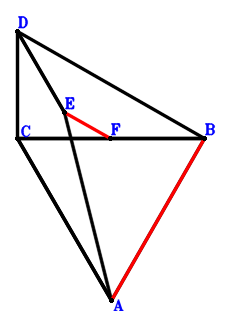
\(\because \) AC//ED and AC=2ED \(\therefore \small\overrightarrow{BE}=\dfrac{\small\overrightarrow{BA}}{2} - \dfrac{\small\overrightarrow{BC}}{2} + \small\overrightarrow{BD}\).\(\because \) F is the midpoint of CB \(\therefore \small\overrightarrow{BF}=\dfrac{\small\overrightarrow{BC}}{2}\).\(\because \) CB=AC \(\therefore - \small\overrightarrow{AC}^{2} + \small\overrightarrow{CB}^{2}=\small\overrightarrow{BC}^{2} - \left(- \small\overrightarrow{BA} + \small\overrightarrow{BC}\right)^{2}=- \small\overrightarrow{BA}^{2} + 2 \small\overrightarrow{BA} \cdot \small\overrightarrow{BC}=0\) . . . . . . \(①\)\(\because \) AB⊥BD \(\therefore \small\overrightarrow{BA} \cdot \small\overrightarrow{BD}=0\) . . . . . . \(②\)In conclusion, \(\small\overrightarrow{AB} \cdot \small\overrightarrow{EF}=- \small\overrightarrow{BA} \cdot \left(- \small\overrightarrow{BE} + \small\overrightarrow{BF}\right)=- \small\overrightarrow{BA} \cdot \left(- \dfrac{\small\overrightarrow{BA}}{2} + \small\overrightarrow{BC} - \small\overrightarrow{BD}\right)=\dfrac{\small\overrightarrow{BA}^{2}}{2} - \small\overrightarrow{BA} \cdot \small\overrightarrow{BC} + \small\overrightarrow{BA} \cdot \small\overrightarrow{BD}=-1/2\cdot①+②=0\), that is, AB⊥EF.
Exercise 653： Let DCEB be a parallelogram. F is the midpoint of AG and CE. AB⊥BD. CB=AC. Prove that DG⊥AB.
\(\because \) DCEB is a parallelogram \(\therefore \small\overrightarrow{BE}=\small\overrightarrow{BC} - \small\overrightarrow{BD}\).\(\because \) F is the midpoint of CE \(\therefore \small\overrightarrow{BF}=\dfrac{\small\overrightarrow{BC}}{2} + \dfrac{\small\overrightarrow{BE}}{2}=\small\overrightarrow{BC} - \dfrac{\small\overrightarrow{BD}}{2}\).\(\because \) F is the midpoint of AG \(\therefore \small\overrightarrow{BG}=- \small\overrightarrow{BA} + 2 \small\overrightarrow{BF}=- \small\overrightarrow{BA} + 2 \small\overrightarrow{BC} - \small\overrightarrow{BD}\).\(\because \) CB=AC \(\therefore - \small\overrightarrow{AC}^{2} + \small\overrightarrow{CB}^{2}=\small\overrightarrow{BC}^{2} - \left(- \small\overrightarrow{BA} + \small\overrightarrow{BC}\right)^{2}=- \small\overrightarrow{BA}^{2} + 2 \small\overrightarrow{BA} \cdot \small\overrightarrow{BC}=0\) . . . . . . \(①\)\(\because \) AB⊥BD \(\therefore \small\overrightarrow{BA} \cdot \small\overrightarrow{BD}=0\) . . . . . . \(②\)In conclusion, \(\small\overrightarrow{AB} \cdot \small\overrightarrow{DG}=- \small\overrightarrow{BA} \cdot \left(- \small\overrightarrow{BD} + \small\overrightarrow{BG}\right)=- \small\overrightarrow{BA} \cdot \left(- \small\overrightarrow{BA} + 2 \small\overrightarrow{BC} - 2 \small\overrightarrow{BD}\right)=\small\overrightarrow{BA}^{2} - 2 \small\overrightarrow{BA} \cdot \small\overrightarrow{BC} + 2 \small\overrightarrow{BA} \cdot \small\overrightarrow{BD}=-①+2\cdot②=0\), that is, DG⊥AB.
Exercise 663： Let H, G be the midpoints of CB, FD, respectively. E is the midpoint of FC and AD. AB⊥BD. CB=AC. Prove that AB⊥GH.
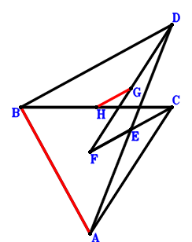
\(\because \) E is the midpoint of AD \(\therefore \small\overrightarrow{BE}=\dfrac{\small\overrightarrow{BA}}{2} + \dfrac{\small\overrightarrow{BD}}{2}\).\(\because \) E is the midpoint of FC \(\therefore \small\overrightarrow{BF}=- \small\overrightarrow{BC} + 2 \small\overrightarrow{BE}=\small\overrightarrow{BA} - \small\overrightarrow{BC} + \small\overrightarrow{BD}\).\(\because \) G is the midpoint of FD \(\therefore \small\overrightarrow{BG}=\dfrac{\small\overrightarrow{BD}}{2} + \dfrac{\small\overrightarrow{BF}}{2}=\dfrac{\small\overrightarrow{BA}}{2} - \dfrac{\small\overrightarrow{BC}}{2} + \small\overrightarrow{BD}\).\(\because \) H is the midpoint of CB \(\therefore \small\overrightarrow{BH}=\dfrac{\small\overrightarrow{BC}}{2}\).\(\because \) CB=AC \(\therefore - \small\overrightarrow{AC}^{2} + \small\overrightarrow{CB}^{2}=\small\overrightarrow{BC}^{2} - \left(- \small\overrightarrow{BA} + \small\overrightarrow{BC}\right)^{2}=- \small\overrightarrow{BA}^{2} + 2 \small\overrightarrow{BA} \cdot \small\overrightarrow{BC}=0\) . . . . . . \(①\)\(\because \) AB⊥BD \(\therefore \small\overrightarrow{BA} \cdot \small\overrightarrow{BD}=0\) . . . . . . \(②\)In conclusion, \(\small\overrightarrow{AB} \cdot \small\overrightarrow{GH}=- \small\overrightarrow{BA} \cdot \left(- \small\overrightarrow{BG} + \small\overrightarrow{BH}\right)=- \small\overrightarrow{BA} \cdot \left(- \dfrac{\small\overrightarrow{BA}}{2} + \small\overrightarrow{BC} - \small\overrightarrow{BD}\right)=\dfrac{\small\overrightarrow{BA}^{2}}{2} - \small\overrightarrow{BA} \cdot \small\overrightarrow{BC} + \small\overrightarrow{BA} \cdot \small\overrightarrow{BD}=-1/2\cdot①+②=0\), that is, AB⊥GH.
Exercise 675： Let C be the midpoint of ED. F is the midpoint of AG and EB. AB⊥BD. CB=AC. Prove that GD⊥AB.
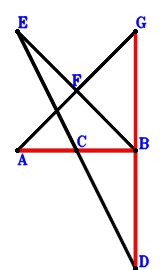
\(\because \) C is the midpoint of ED \(\therefore \small\overrightarrow{BE}=2 \small\overrightarrow{BC} - \small\overrightarrow{BD}\).\(\because \) F is the midpoint of EB \(\therefore \small\overrightarrow{BF}=\dfrac{\small\overrightarrow{BE}}{2}=\small\overrightarrow{BC} - \dfrac{\small\overrightarrow{BD}}{2}\).\(\because \) F is the midpoint of AG \(\therefore \small\overrightarrow{BG}=- \small\overrightarrow{BA} + 2 \small\overrightarrow{BF}=- \small\overrightarrow{BA} + 2 \small\overrightarrow{BC} - \small\overrightarrow{BD}\).\(\because \) CB=AC \(\therefore - \small\overrightarrow{AC}^{2} + \small\overrightarrow{CB}^{2}=\small\overrightarrow{BC}^{2} - \left(- \small\overrightarrow{BA} + \small\overrightarrow{BC}\right)^{2}=- \small\overrightarrow{BA}^{2} + 2 \small\overrightarrow{BA} \cdot \small\overrightarrow{BC}=0\) . . . . . . \(①\)\(\because \) AB⊥BD \(\therefore \small\overrightarrow{BA} \cdot \small\overrightarrow{BD}=0\) . . . . . . \(②\)In conclusion, \(\small\overrightarrow{AB} \cdot \small\overrightarrow{DG}=- \small\overrightarrow{BA} \cdot \left(- \small\overrightarrow{BD} + \small\overrightarrow{BG}\right)=- \small\overrightarrow{BA} \cdot \left(- \small\overrightarrow{BA} + 2 \small\overrightarrow{BC} - 2 \small\overrightarrow{BD}\right)=\small\overrightarrow{BA}^{2} - 2 \small\overrightarrow{BA} \cdot \small\overrightarrow{BC} + 2 \small\overrightarrow{BA} \cdot \small\overrightarrow{BD}=-①+2\cdot②=0\), that is, GD⊥AB.
Exercise 680： Let DFEC be a trapezoid with CD//EF and CD=2EF. G, E are the midpoints of CB, AD, respectively. AB⊥BD. CB=AC. Prove that AB⊥FG.
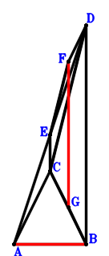
\(\because \) E is the midpoint of AD \(\therefore \small\overrightarrow{BE}=\dfrac{\small\overrightarrow{BA}}{2} + \dfrac{\small\overrightarrow{BD}}{2}\).\(\because \) CD//EF and CD=2EF \(\therefore \small\overrightarrow{BF}=\dfrac{\small\overrightarrow{BA}}{2} - \dfrac{\small\overrightarrow{BC}}{2} + \small\overrightarrow{BD}\).\(\because \) G is the midpoint of CB \(\therefore \small\overrightarrow{BG}=\dfrac{\small\overrightarrow{BC}}{2}\).\(\because \) CB=AC \(\therefore - \small\overrightarrow{AC}^{2} + \small\overrightarrow{CB}^{2}=\small\overrightarrow{BC}^{2} - \left(- \small\overrightarrow{BA} + \small\overrightarrow{BC}\right)^{2}=- \small\overrightarrow{BA}^{2} + 2 \small\overrightarrow{BA} \cdot \small\overrightarrow{BC}=0\) . . . . . . \(①\)\(\because \) AB⊥BD \(\therefore \small\overrightarrow{BA} \cdot \small\overrightarrow{BD}=0\) . . . . . . \(②\)In conclusion, \(\small\overrightarrow{AB} \cdot \small\overrightarrow{FG}=- \small\overrightarrow{BA} \cdot \left(- \small\overrightarrow{BF} + \small\overrightarrow{BG}\right)=- \small\overrightarrow{BA} \cdot \left(- \dfrac{\small\overrightarrow{BA}}{2} + \small\overrightarrow{BC} - \small\overrightarrow{BD}\right)=\dfrac{\small\overrightarrow{BA}^{2}}{2} - \small\overrightarrow{BA} \cdot \small\overrightarrow{BC} + \small\overrightarrow{BA} \cdot \small\overrightarrow{BD}=-1/2\cdot①+②=0\), that is, AB⊥FG.
Exercise 693： Let DEAC and DCFB be parallelograms. AB⊥BD. CB=AC. Prove that EF⊥AB.
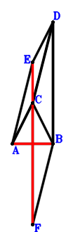
\(\because \) DEAC is a parallelogram \(\therefore \small\overrightarrow{BE}=\small\overrightarrow{BA} - \small\overrightarrow{BC} + \small\overrightarrow{BD}\).\(\because \) DCFB is a parallelogram \(\therefore \small\overrightarrow{BF}=\small\overrightarrow{BC} - \small\overrightarrow{BD}\).\(\because \) CB=AC \(\therefore - \small\overrightarrow{AC}^{2} + \small\overrightarrow{CB}^{2}=\small\overrightarrow{BC}^{2} - \left(- \small\overrightarrow{BA} + \small\overrightarrow{BC}\right)^{2}=- \small\overrightarrow{BA}^{2} + 2 \small\overrightarrow{BA} \cdot \small\overrightarrow{BC}=0\) . . . . . . \(①\)\(\because \) AB⊥BD \(\therefore \small\overrightarrow{BA} \cdot \small\overrightarrow{BD}=0\) . . . . . . \(②\)In conclusion, \(\small\overrightarrow{AB} \cdot \small\overrightarrow{EF}=- \small\overrightarrow{BA} \cdot \left(- \small\overrightarrow{BE} + \small\overrightarrow{BF}\right)=- \small\overrightarrow{BA} \cdot \left(- \small\overrightarrow{BA} + 2 \small\overrightarrow{BC} - 2 \small\overrightarrow{BD}\right)=\small\overrightarrow{BA}^{2} - 2 \small\overrightarrow{BA} \cdot \small\overrightarrow{BC} + 2 \small\overrightarrow{BA} \cdot \small\overrightarrow{BD}=-①+2\cdot②=0\), that is, EF⊥AB.
Exercise 701： Let FCGB be a parallelogram. E is the midpoint of FC and AD. AB⊥BD. CB=AC. Prove that DG⊥AB.
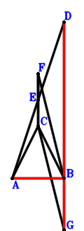
\(\because \) E is the midpoint of AD \(\therefore \small\overrightarrow{BE}=\dfrac{\small\overrightarrow{BA}}{2} + \dfrac{\small\overrightarrow{BD}}{2}\).\(\because \) E is the midpoint of FC \(\therefore \small\overrightarrow{BF}=- \small\overrightarrow{BC} + 2 \small\overrightarrow{BE}=\small\overrightarrow{BA} - \small\overrightarrow{BC} + \small\overrightarrow{BD}\).\(\because \) FCGB is a parallelogram \(\therefore \small\overrightarrow{BG}=\small\overrightarrow{BC} - \small\overrightarrow{BF}=- \small\overrightarrow{BA} + 2 \small\overrightarrow{BC} - \small\overrightarrow{BD}\).\(\because \) CB=AC \(\therefore - \small\overrightarrow{AC}^{2} + \small\overrightarrow{CB}^{2}=\small\overrightarrow{BC}^{2} - \left(- \small\overrightarrow{BA} + \small\overrightarrow{BC}\right)^{2}=- \small\overrightarrow{BA}^{2} + 2 \small\overrightarrow{BA} \cdot \small\overrightarrow{BC}=0\) . . . . . . \(①\)\(\because \) AB⊥BD \(\therefore \small\overrightarrow{BA} \cdot \small\overrightarrow{BD}=0\) . . . . . . \(②\)In conclusion, \(\small\overrightarrow{AB} \cdot \small\overrightarrow{DG}=- \small\overrightarrow{BA} \cdot \left(- \small\overrightarrow{BD} + \small\overrightarrow{BG}\right)=- \small\overrightarrow{BA} \cdot \left(- \small\overrightarrow{BA} + 2 \small\overrightarrow{BC} - 2 \small\overrightarrow{BD}\right)=\small\overrightarrow{BA}^{2} - 2 \small\overrightarrow{BA} \cdot \small\overrightarrow{BC} + 2 \small\overrightarrow{BA} \cdot \small\overrightarrow{BD}=-①+2\cdot②=0\), that is, DG⊥AB.
Exercise 704： Let FEGD be a trapezoid with GD//EF and GD=2EF. F, E are the midpoints of CB, AD, respectively. AB⊥BD. CB=AC. Prove that AB⊥CG.
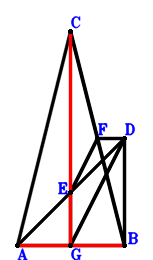
\(\because \) E is the midpoint of AD \(\therefore \small\overrightarrow{BE}=\dfrac{\small\overrightarrow{BA}}{2} + \dfrac{\small\overrightarrow{BD}}{2}\).\(\because \) F is the midpoint of CB \(\therefore \small\overrightarrow{BF}=\dfrac{\small\overrightarrow{BC}}{2}\).\(\because \) GD//EF and GD=2EF \(\therefore \small\overrightarrow{BG}=\small\overrightarrow{BA} + 2 \small\overrightarrow{BD} - 2 \small\overrightarrow{BF}=\small\overrightarrow{BA} - \small\overrightarrow{BC} + 2 \small\overrightarrow{BD}\).\(\because \) CB=AC \(\therefore - \small\overrightarrow{AC}^{2} + \small\overrightarrow{CB}^{2}=\small\overrightarrow{BC}^{2} - \left(- \small\overrightarrow{BA} + \small\overrightarrow{BC}\right)^{2}=- \small\overrightarrow{BA}^{2} + 2 \small\overrightarrow{BA} \cdot \small\overrightarrow{BC}=0\) . . . . . . \(①\)\(\because \) AB⊥BD \(\therefore \small\overrightarrow{BA} \cdot \small\overrightarrow{BD}=0\) . . . . . . \(②\)In conclusion, \(\small\overrightarrow{AB} \cdot \small\overrightarrow{GC}=- \small\overrightarrow{BA} \cdot \left(\small\overrightarrow{BC} - \small\overrightarrow{BG}\right)=- \small\overrightarrow{BA} \cdot \left(- \small\overrightarrow{BA} + 2 \small\overrightarrow{BC} - 2 \small\overrightarrow{BD}\right)=\small\overrightarrow{BA}^{2} - 2 \small\overrightarrow{BA} \cdot \small\overrightarrow{BC} + 2 \small\overrightarrow{BA} \cdot \small\overrightarrow{BD}=-①+2\cdot②=0\), that is, AB⊥CG.
Exercise 707： Let AFEB be a parallelogram. D is the midpoint of CE. AB⊥BD. CB=AC. Prove that AB⊥CF.
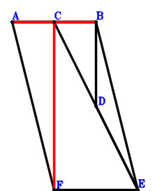
\(\because \) D is the midpoint of CE \(\therefore \small\overrightarrow{BE}=- \small\overrightarrow{BC} + 2 \small\overrightarrow{BD}\).\(\because \) AFEB is a parallelogram \(\therefore \small\overrightarrow{BF}=\small\overrightarrow{BA} - \small\overrightarrow{BC} + 2 \small\overrightarrow{BD}\).\(\because \) CB=AC \(\therefore - \small\overrightarrow{AC}^{2} + \small\overrightarrow{CB}^{2}=\small\overrightarrow{BC}^{2} - \left(- \small\overrightarrow{BA} + \small\overrightarrow{BC}\right)^{2}=- \small\overrightarrow{BA}^{2} + 2 \small\overrightarrow{BA} \cdot \small\overrightarrow{BC}=0\) . . . . . . \(①\)\(\because \) AB⊥BD \(\therefore \small\overrightarrow{BA} \cdot \small\overrightarrow{BD}=0\) . . . . . . \(②\)In conclusion, \(\small\overrightarrow{AB} \cdot \small\overrightarrow{FC}=- \small\overrightarrow{BA} \cdot \left(\small\overrightarrow{BC} - \small\overrightarrow{BF}\right)=- \small\overrightarrow{BA} \cdot \left(- \small\overrightarrow{BA} + 2 \small\overrightarrow{BC} - 2 \small\overrightarrow{BD}\right)=\small\overrightarrow{BA}^{2} - 2 \small\overrightarrow{BA} \cdot \small\overrightarrow{BC} + 2 \small\overrightarrow{BA} \cdot \small\overrightarrow{BD}=-①+2\cdot②=0\), that is, AB⊥CF.
Exercise 712： Let EAFD be a trapezoid with AF//ED and AF=2ED. E is the midpoint of CB. AB⊥BD. CB=AC. Prove that AB⊥CF.
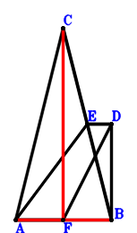
\(\because \) E is the midpoint of CB \(\therefore \small\overrightarrow{BE}=\dfrac{\small\overrightarrow{BC}}{2}\).\(\because \) AF//ED and AF=2ED \(\therefore \small\overrightarrow{BF}=\small\overrightarrow{BA} + 2 \small\overrightarrow{BD} - 2 \small\overrightarrow{BE}=\small\overrightarrow{BA} - \small\overrightarrow{BC} + 2 \small\overrightarrow{BD}\).\(\because \) CB=AC \(\therefore - \small\overrightarrow{AC}^{2} + \small\overrightarrow{CB}^{2}=\small\overrightarrow{BC}^{2} - \left(- \small\overrightarrow{BA} + \small\overrightarrow{BC}\right)^{2}=- \small\overrightarrow{BA}^{2} + 2 \small\overrightarrow{BA} \cdot \small\overrightarrow{BC}=0\) . . . . . . \(①\)\(\because \) AB⊥BD \(\therefore \small\overrightarrow{BA} \cdot \small\overrightarrow{BD}=0\) . . . . . . \(②\)In conclusion, \(\small\overrightarrow{AB} \cdot \small\overrightarrow{FC}=- \small\overrightarrow{BA} \cdot \left(\small\overrightarrow{BC} - \small\overrightarrow{BF}\right)=- \small\overrightarrow{BA} \cdot \left(- \small\overrightarrow{BA} + 2 \small\overrightarrow{BC} - 2 \small\overrightarrow{BD}\right)=\small\overrightarrow{BA}^{2} - 2 \small\overrightarrow{BA} \cdot \small\overrightarrow{BC} + 2 \small\overrightarrow{BA} \cdot \small\overrightarrow{BD}=-①+2\cdot②=0\), that is, AB⊥CF.
Exercise 722： Let C, F, B be collinear and FB=2CF. A, E, D are collinear and AE=2ED. AB⊥BD. CB=AC. Prove that AB⊥FE.
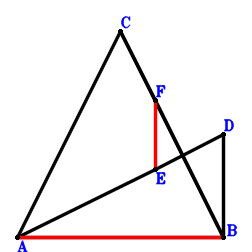
\(\because \) A, E, D are collinear and AE=2ED \(\therefore \small\overrightarrow{BE}=\dfrac{\small\overrightarrow{BA}}{3} + \dfrac{2 \small\overrightarrow{BD}}{3}\).\(\because \) C, F, B are collinear and FB=2CF \(\therefore \small\overrightarrow{BF}=\dfrac{2 \small\overrightarrow{BC}}{3}\).\(\because \) CB=AC \(\therefore - \small\overrightarrow{AC}^{2} + \small\overrightarrow{CB}^{2}=\small\overrightarrow{BC}^{2} - \left(- \small\overrightarrow{BA} + \small\overrightarrow{BC}\right)^{2}=- \small\overrightarrow{BA}^{2} + 2 \small\overrightarrow{BA} \cdot \small\overrightarrow{BC}=0\) . . . . . . \(①\)\(\because \) AB⊥BD \(\therefore \small\overrightarrow{BA} \cdot \small\overrightarrow{BD}=0\) . . . . . . \(②\)In conclusion, \(\small\overrightarrow{AB} \cdot \small\overrightarrow{EF}=- \small\overrightarrow{BA} \cdot \left(- \small\overrightarrow{BE} + \small\overrightarrow{BF}\right)=- \small\overrightarrow{BA} \cdot \left(- \dfrac{\small\overrightarrow{BA}}{3} + \dfrac{2 \small\overrightarrow{BC}}{3} - \dfrac{2 \small\overrightarrow{BD}}{3}\right)=\dfrac{\small\overrightarrow{BA}^{2}}{3} - \dfrac{2 \small\overrightarrow{BA} \cdot \small\overrightarrow{BC}}{3} + \dfrac{2 \small\overrightarrow{BA} \cdot \small\overrightarrow{BD}}{3}=-1/3\cdot①+2/3\cdot②=0\), that is, AB⊥FE.
Exercise 728： Let EBDC be a trapezoid with BD//EC and BD=2EC. E is the midpoint of FD. FA⊥AB. CB=AC. Prove that AB⊥BD.
\(\because \) BD//EC and BD=2EC \(\therefore \small\overrightarrow{BE}=\small\overrightarrow{BC} - \dfrac{\small\overrightarrow{BD}}{2}\).\(\because \) E is the midpoint of FD \(\therefore \small\overrightarrow{BF}=- \small\overrightarrow{BD} + 2 \small\overrightarrow{BE}=2 \small\overrightarrow{BC} - 2 \small\overrightarrow{BD}\).\(\because \) CB=AC \(\therefore - \small\overrightarrow{AC}^{2} + \small\overrightarrow{CB}^{2}=\small\overrightarrow{BC}^{2} - \left(- \small\overrightarrow{BA} + \small\overrightarrow{BC}\right)^{2}=- \small\overrightarrow{BA}^{2} + 2 \small\overrightarrow{BA} \cdot \small\overrightarrow{BC}=0\) . . . . . . \(①\)\(\because \) FA⊥AB \(\therefore \small\overrightarrow{AB} \cdot \small\overrightarrow{AF}=- \small\overrightarrow{BA} \cdot \left(- \small\overrightarrow{BA} + \small\overrightarrow{BF}\right)=- \small\overrightarrow{BA} \cdot \left(- \small\overrightarrow{BA} + 2 \small\overrightarrow{BC} - 2 \small\overrightarrow{BD}\right)=\small\overrightarrow{BA}^{2} - 2 \small\overrightarrow{BA} \cdot \small\overrightarrow{BC} + 2 \small\overrightarrow{BA} \cdot \small\overrightarrow{BD}=0\) . . . . . . \(②\)In conclusion, \(\small\overrightarrow{BA} \cdot \small\overrightarrow{BD}=1/2\cdot①+1/2\cdot②=0\), that is, AB⊥BD.
Exercise 730： Let DCEB be a parallelogram. F is the midpoint of CE and GD. GA⊥AB. CB=AC. Prove that AB⊥BD.
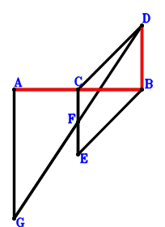
\(\because \) DCEB is a parallelogram \(\therefore \small\overrightarrow{BE}=\small\overrightarrow{BC} - \small\overrightarrow{BD}\).\(\because \) F is the midpoint of CE \(\therefore \small\overrightarrow{BF}=\dfrac{\small\overrightarrow{BC}}{2} + \dfrac{\small\overrightarrow{BE}}{2}=\small\overrightarrow{BC} - \dfrac{\small\overrightarrow{BD}}{2}\).\(\because \) F is the midpoint of GD \(\therefore \small\overrightarrow{BG}=- \small\overrightarrow{BD} + 2 \small\overrightarrow{BF}=2 \small\overrightarrow{BC} - 2 \small\overrightarrow{BD}\).\(\because \) CB=AC \(\therefore - \small\overrightarrow{AC}^{2} + \small\overrightarrow{CB}^{2}=\small\overrightarrow{BC}^{2} - \left(- \small\overrightarrow{BA} + \small\overrightarrow{BC}\right)^{2}=- \small\overrightarrow{BA}^{2} + 2 \small\overrightarrow{BA} \cdot \small\overrightarrow{BC}=0\) . . . . . . \(①\)\(\because \) GA⊥AB \(\therefore \small\overrightarrow{AB} \cdot \small\overrightarrow{AG}=- \small\overrightarrow{BA} \cdot \left(- \small\overrightarrow{BA} + \small\overrightarrow{BG}\right)=- \small\overrightarrow{BA} \cdot \left(- \small\overrightarrow{BA} + 2 \small\overrightarrow{BC} - 2 \small\overrightarrow{BD}\right)=\small\overrightarrow{BA}^{2} - 2 \small\overrightarrow{BA} \cdot \small\overrightarrow{BC} + 2 \small\overrightarrow{BA} \cdot \small\overrightarrow{BD}=0\) . . . . . . \(②\)In conclusion, \(\small\overrightarrow{BA} \cdot \small\overrightarrow{BD}=1/2\cdot①+1/2\cdot②=0\), that is, AB⊥BD.
Exercise 731： Let E be the midpoint of FC and AD. G is the midpoint of HC and FD. HB⊥BA. CB=AC. Prove that AB⊥BD.
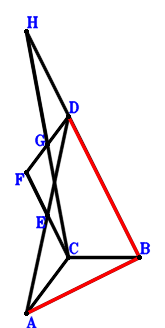
\(\because \) E is the midpoint of AD \(\therefore \small\overrightarrow{BE}=\dfrac{\small\overrightarrow{BA}}{2} + \dfrac{\small\overrightarrow{BD}}{2}\).\(\because \) E is the midpoint of FC \(\therefore \small\overrightarrow{BF}=- \small\overrightarrow{BC} + 2 \small\overrightarrow{BE}=\small\overrightarrow{BA} - \small\overrightarrow{BC} + \small\overrightarrow{BD}\).\(\because \) G is the midpoint of FD \(\therefore \small\overrightarrow{BG}=\dfrac{\small\overrightarrow{BD}}{2} + \dfrac{\small\overrightarrow{BF}}{2}=\dfrac{\small\overrightarrow{BA}}{2} - \dfrac{\small\overrightarrow{BC}}{2} + \small\overrightarrow{BD}\).\(\because \) G is the midpoint of HC \(\therefore \small\overrightarrow{BH}=- \small\overrightarrow{BC} + 2 \small\overrightarrow{BG}=\small\overrightarrow{BA} - 2 \small\overrightarrow{BC} + 2 \small\overrightarrow{BD}\).\(\because \) CB=AC \(\therefore - \small\overrightarrow{AC}^{2} + \small\overrightarrow{CB}^{2}=\small\overrightarrow{BC}^{2} - \left(- \small\overrightarrow{BA} + \small\overrightarrow{BC}\right)^{2}=- \small\overrightarrow{BA}^{2} + 2 \small\overrightarrow{BA} \cdot \small\overrightarrow{BC}=0\) . . . . . . \(①\)\(\because \) HB⊥BA \(\therefore \small\overrightarrow{BA} \cdot \small\overrightarrow{BH}=\small\overrightarrow{BA} \cdot \left(\small\overrightarrow{BA} - 2 \small\overrightarrow{BC} + 2 \small\overrightarrow{BD}\right)=\small\overrightarrow{BA}^{2} - 2 \small\overrightarrow{BA} \cdot \small\overrightarrow{BC} + 2 \small\overrightarrow{BA} \cdot \small\overrightarrow{BD}=0\) . . . . . . \(②\)In conclusion, \(\small\overrightarrow{BA} \cdot \small\overrightarrow{BD}=1/2\cdot①+1/2\cdot②=0\), that is, AB⊥BD.
Exercise 737： Let C be the midpoint of FD. E is the midpoint of AD and FG. AB⊥BG. CB=AC. Prove that AB⊥BD.
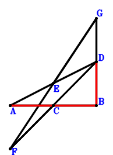
\(\because \) E is the midpoint of AD \(\therefore \small\overrightarrow{BE}=\dfrac{\small\overrightarrow{BA}}{2} + \dfrac{\small\overrightarrow{BD}}{2}\).\(\because \) C is the midpoint of FD \(\therefore \small\overrightarrow{BF}=2 \small\overrightarrow{BC} - \small\overrightarrow{BD}\).\(\because \) E is the midpoint of FG \(\therefore \small\overrightarrow{BG}=\small\overrightarrow{BA} + \small\overrightarrow{BD} - \small\overrightarrow{BF}=\small\overrightarrow{BA} - 2 \small\overrightarrow{BC} + 2 \small\overrightarrow{BD}\).\(\because \) CB=AC \(\therefore - \small\overrightarrow{AC}^{2} + \small\overrightarrow{CB}^{2}=\small\overrightarrow{BC}^{2} - \left(- \small\overrightarrow{BA} + \small\overrightarrow{BC}\right)^{2}=- \small\overrightarrow{BA}^{2} + 2 \small\overrightarrow{BA} \cdot \small\overrightarrow{BC}=0\) . . . . . . \(①\)\(\because \) AB⊥BG \(\therefore \small\overrightarrow{BA} \cdot \small\overrightarrow{BG}=\small\overrightarrow{BA} \cdot \left(\small\overrightarrow{BA} - 2 \small\overrightarrow{BC} + 2 \small\overrightarrow{BD}\right)=\small\overrightarrow{BA}^{2} - 2 \small\overrightarrow{BA} \cdot \small\overrightarrow{BC} + 2 \small\overrightarrow{BA} \cdot \small\overrightarrow{BD}=0\) . . . . . . \(②\)In conclusion, \(\small\overrightarrow{BA} \cdot \small\overrightarrow{BD}=1/2\cdot①+1/2\cdot②=0\), that is, AB⊥BD.
Exercise 743： Let FECD be a trapezoid with CD//EF and CD=2EF. F, E are the midpoints of CG, AD, respectively. AB⊥BG. CB=AC. Prove that AB⊥BD.
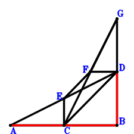
\(\because \) E is the midpoint of AD \(\therefore \small\overrightarrow{BE}=\dfrac{\small\overrightarrow{BA}}{2} + \dfrac{\small\overrightarrow{BD}}{2}\).\(\because \) CD//EF and CD=2EF \(\therefore \small\overrightarrow{BF}=\dfrac{\small\overrightarrow{BA}}{2} - \dfrac{\small\overrightarrow{BC}}{2} + \small\overrightarrow{BD}\).\(\because \) F is the midpoint of CG \(\therefore \small\overrightarrow{BG}=- \small\overrightarrow{BC} + 2 \small\overrightarrow{BF}=\small\overrightarrow{BA} - 2 \small\overrightarrow{BC} + 2 \small\overrightarrow{BD}\).\(\because \) CB=AC \(\therefore - \small\overrightarrow{AC}^{2} + \small\overrightarrow{CB}^{2}=\small\overrightarrow{BC}^{2} - \left(- \small\overrightarrow{BA} + \small\overrightarrow{BC}\right)^{2}=- \small\overrightarrow{BA}^{2} + 2 \small\overrightarrow{BA} \cdot \small\overrightarrow{BC}=0\) . . . . . . \(①\)\(\because \) AB⊥BG \(\therefore \small\overrightarrow{BA} \cdot \small\overrightarrow{BG}=\small\overrightarrow{BA} \cdot \left(\small\overrightarrow{BA} - 2 \small\overrightarrow{BC} + 2 \small\overrightarrow{BD}\right)=\small\overrightarrow{BA}^{2} - 2 \small\overrightarrow{BA} \cdot \small\overrightarrow{BC} + 2 \small\overrightarrow{BA} \cdot \small\overrightarrow{BD}=0\) . . . . . . \(②\)In conclusion, \(\small\overrightarrow{BA} \cdot \small\overrightarrow{BD}=1/2\cdot①+1/2\cdot②=0\), that is, AB⊥BD.
Exercise 748： Let F, E, D be collinear and 2FD=3FE. C, E, B are collinear and EB=2CE. FA⊥AB. CB=CA. Prove that AB⊥BD.
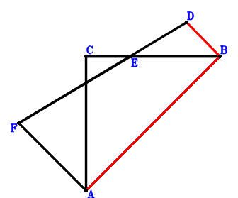
\(\because \) C, E, B are collinear and EB=2CE \(\therefore \small\overrightarrow{BE}=\dfrac{2 \small\overrightarrow{BC}}{3}\).\(\because \) F, E, D are collinear and 2FD=3FE \(\therefore \small\overrightarrow{BF}=- 2 \small\overrightarrow{BD} + 3 \small\overrightarrow{BE}=2 \small\overrightarrow{BC} - 2 \small\overrightarrow{BD}\).\(\because \) CB=CA \(\therefore - \small\overrightarrow{AC}^{2} + \small\overrightarrow{CB}^{2}=\small\overrightarrow{BC}^{2} - \left(- \small\overrightarrow{BA} + \small\overrightarrow{BC}\right)^{2}=- \small\overrightarrow{BA}^{2} + 2 \small\overrightarrow{BA} \cdot \small\overrightarrow{BC}=0\) . . . . . . \(①\)\(\because \) FA⊥AB \(\therefore \small\overrightarrow{AB} \cdot \small\overrightarrow{AF}=- \small\overrightarrow{BA} \cdot \left(- \small\overrightarrow{BA} + \small\overrightarrow{BF}\right)=- \small\overrightarrow{BA} \cdot \left(- \small\overrightarrow{BA} + 2 \small\overrightarrow{BC} - 2 \small\overrightarrow{BD}\right)=\small\overrightarrow{BA}^{2} - 2 \small\overrightarrow{BA} \cdot \small\overrightarrow{BC} + 2 \small\overrightarrow{BA} \cdot \small\overrightarrow{BD}=0\) . . . . . . \(②\)In conclusion, \(\small\overrightarrow{BA} \cdot \small\overrightarrow{BD}=1/2\cdot①+1/2\cdot②=0\), that is, AB⊥BD.
Exercise 749： Let EACD and FECD be parallelograms. AB⊥BF. CB=AC. Prove that AB⊥BD.
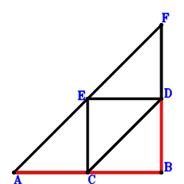
\(\because \) EACD is a parallelogram \(\therefore \small\overrightarrow{BE}=\small\overrightarrow{BA} - \small\overrightarrow{BC} + \small\overrightarrow{BD}\).\(\because \) FECD is a parallelogram \(\therefore \small\overrightarrow{BF}=\small\overrightarrow{BA} - 2 \small\overrightarrow{BC} + 2 \small\overrightarrow{BD}\).\(\because \) CB=AC \(\therefore - \small\overrightarrow{AC}^{2} + \small\overrightarrow{CB}^{2}=\small\overrightarrow{BC}^{2} - \left(- \small\overrightarrow{BA} + \small\overrightarrow{BC}\right)^{2}=- \small\overrightarrow{BA}^{2} + 2 \small\overrightarrow{BA} \cdot \small\overrightarrow{BC}=0\) . . . . . . \(①\)\(\because \) AB⊥BF \(\therefore \small\overrightarrow{BA} \cdot \small\overrightarrow{BF}=\small\overrightarrow{BA} \cdot \left(\small\overrightarrow{BA} - 2 \small\overrightarrow{BC} + 2 \small\overrightarrow{BD}\right)=\small\overrightarrow{BA}^{2} - 2 \small\overrightarrow{BA} \cdot \small\overrightarrow{BC} + 2 \small\overrightarrow{BA} \cdot \small\overrightarrow{BD}=0\) . . . . . . \(②\)In conclusion, \(\small\overrightarrow{BA} \cdot \small\overrightarrow{BD}=1/2\cdot①+1/2\cdot②=0\), that is, AB⊥BD.
Exercise 751： Let GFCD be a parallelogram. E is the midpoint of FC and AD. AB⊥BG. CB=AC. Prove that AB⊥BD.
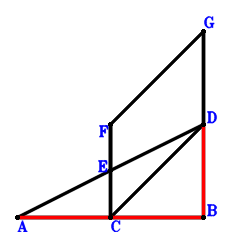
\(\because \) E is the midpoint of AD \(\therefore \small\overrightarrow{BE}=\dfrac{\small\overrightarrow{BA}}{2} + \dfrac{\small\overrightarrow{BD}}{2}\).\(\because \) E is the midpoint of FC \(\therefore \small\overrightarrow{BF}=- \small\overrightarrow{BC} + 2 \small\overrightarrow{BE}=\small\overrightarrow{BA} - \small\overrightarrow{BC} + \small\overrightarrow{BD}\).\(\because \) GFCD is a parallelogram \(\therefore \small\overrightarrow{BG}=\small\overrightarrow{BA} - 2 \small\overrightarrow{BC} + 2 \small\overrightarrow{BD}\).\(\because \) CB=AC \(\therefore - \small\overrightarrow{AC}^{2} + \small\overrightarrow{CB}^{2}=\small\overrightarrow{BC}^{2} - \left(- \small\overrightarrow{BA} + \small\overrightarrow{BC}\right)^{2}=- \small\overrightarrow{BA}^{2} + 2 \small\overrightarrow{BA} \cdot \small\overrightarrow{BC}=0\) . . . . . . \(①\)\(\because \) AB⊥BG \(\therefore \small\overrightarrow{BA} \cdot \small\overrightarrow{BG}=\small\overrightarrow{BA} \cdot \left(\small\overrightarrow{BA} - 2 \small\overrightarrow{BC} + 2 \small\overrightarrow{BD}\right)=\small\overrightarrow{BA}^{2} - 2 \small\overrightarrow{BA} \cdot \small\overrightarrow{BC} + 2 \small\overrightarrow{BA} \cdot \small\overrightarrow{BD}=0\) . . . . . . \(②\)In conclusion, \(\small\overrightarrow{BA} \cdot \small\overrightarrow{BD}=1/2\cdot①+1/2\cdot②=0\), that is, AB⊥BD.
Exercise 754： Let FCDE be a trapezoid with CF//DE and CF=2DE. E is the midpoint of CB. BA⊥AF. CB=AC. Prove that DB⊥BA.
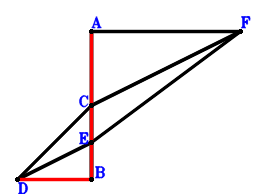
\(\because \) E is the midpoint of CB \(\therefore \small\overrightarrow{BE}=\dfrac{\small\overrightarrow{BC}}{2}\).\(\because \) CF//DE and CF=2DE \(\therefore \small\overrightarrow{BF}=\small\overrightarrow{BC} - 2 \small\overrightarrow{BD} + 2 \small\overrightarrow{BE}=2 \small\overrightarrow{BC} - 2 \small\overrightarrow{BD}\).\(\because \) CB=AC \(\therefore - \small\overrightarrow{AC}^{2} + \small\overrightarrow{CB}^{2}=\small\overrightarrow{BC}^{2} - \left(- \small\overrightarrow{BA} + \small\overrightarrow{BC}\right)^{2}=- \small\overrightarrow{BA}^{2} + 2 \small\overrightarrow{BA} \cdot \small\overrightarrow{BC}=0\) . . . . . . \(①\)\(\because \) BA⊥AF \(\therefore \small\overrightarrow{AB} \cdot \small\overrightarrow{AF}=- \small\overrightarrow{BA} \cdot \left(- \small\overrightarrow{BA} + \small\overrightarrow{BF}\right)=- \small\overrightarrow{BA} \cdot \left(- \small\overrightarrow{BA} + 2 \small\overrightarrow{BC} - 2 \small\overrightarrow{BD}\right)=\small\overrightarrow{BA}^{2} - 2 \small\overrightarrow{BA} \cdot \small\overrightarrow{BC} + 2 \small\overrightarrow{BA} \cdot \small\overrightarrow{BD}=0\) . . . . . . \(②\)In conclusion, \(\small\overrightarrow{BA} \cdot \small\overrightarrow{BD}=1/2\cdot①+1/2\cdot②=0\), that is, DB⊥BA.
Exercise 755： Let FACE be a parallelogram. D is the midpoint of CE. AB⊥BF. CB=AC. Prove that AB⊥BD.
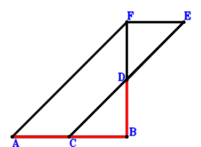
\(\because \) D is the midpoint of CE \(\therefore \small\overrightarrow{BE}=- \small\overrightarrow{BC} + 2 \small\overrightarrow{BD}\).\(\because \) FACE is a parallelogram \(\therefore \small\overrightarrow{BF}=\small\overrightarrow{BA} - 2 \small\overrightarrow{BC} + 2 \small\overrightarrow{BD}\).\(\because \) CB=AC \(\therefore - \small\overrightarrow{AC}^{2} + \small\overrightarrow{CB}^{2}=\small\overrightarrow{BC}^{2} - \left(- \small\overrightarrow{BA} + \small\overrightarrow{BC}\right)^{2}=- \small\overrightarrow{BA}^{2} + 2 \small\overrightarrow{BA} \cdot \small\overrightarrow{BC}=0\) . . . . . . \(①\)\(\because \) AB⊥BF \(\therefore \small\overrightarrow{BA} \cdot \small\overrightarrow{BF}=\small\overrightarrow{BA} \cdot \left(\small\overrightarrow{BA} - 2 \small\overrightarrow{BC} + 2 \small\overrightarrow{BD}\right)=\small\overrightarrow{BA}^{2} - 2 \small\overrightarrow{BA} \cdot \small\overrightarrow{BC} + 2 \small\overrightarrow{BA} \cdot \small\overrightarrow{BD}=0\) . . . . . . \(②\)In conclusion, \(\small\overrightarrow{BA} \cdot \small\overrightarrow{BD}=1/2\cdot①+1/2\cdot②=0\), that is, AB⊥BD.
Exercise 759： Let AB⊥BD. AB=CA. Given that AB//CD, prove that \(CB^{2}=2 AB \cdot CD\).
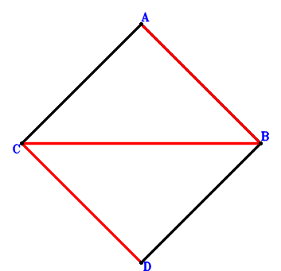
\(\because \) AB=CA \(\therefore \small\overrightarrow{AB}^{2} - \small\overrightarrow{AC}^{2}=\small\overrightarrow{BA}^{2} - \left(- \small\overrightarrow{BA} + \small\overrightarrow{BC}\right)^{2}=2 \small\overrightarrow{BA} \cdot \small\overrightarrow{BC} - \small\overrightarrow{BC}^{2}=0\) . . . . . . \(①\)\(\because \) AB⊥BD \(\therefore \small\overrightarrow{BA} \cdot \small\overrightarrow{BD}=0\) . . . . . . \(②\)In conclusion, \(- 2 \small\overrightarrow{AB} \cdot \small\overrightarrow{CD} + \small\overrightarrow{CB}^{2}=2 \small\overrightarrow{BA} \cdot \left(- \small\overrightarrow{BC} + \small\overrightarrow{BD}\right) + \small\overrightarrow{BC}^{2}=- 2 \small\overrightarrow{BA} \cdot \small\overrightarrow{BC} + 2 \small\overrightarrow{BA} \cdot \small\overrightarrow{BD} + \small\overrightarrow{BC}^{2}=-①+2\cdot②=0\)\(\because\) AB//CD \(\therefore\) \(CB^{2}=2 AB \cdot CD\).
Exercise 763： Let DAEB be a trapezoid with AD//EB and AD=2EB. F is the midpoint of DB. AB⊥FE. CB=AC. Prove that AB⊥DC.
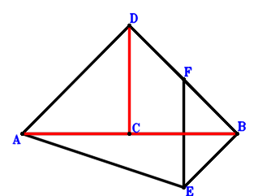
\(\because \) AD//EB and AD=2EB \(\therefore \small\overrightarrow{BE}=\dfrac{\small\overrightarrow{BA}}{2} - \dfrac{\small\overrightarrow{BD}}{2}\).\(\because \) F is the midpoint of DB \(\therefore \small\overrightarrow{BF}=\dfrac{\small\overrightarrow{BD}}{2}\).\(\because \) CB=AC \(\therefore - \small\overrightarrow{AC}^{2} + \small\overrightarrow{CB}^{2}=\small\overrightarrow{BC}^{2} - \left(- \small\overrightarrow{BA} + \small\overrightarrow{BC}\right)^{2}=- \small\overrightarrow{BA}^{2} + 2 \small\overrightarrow{BA} \cdot \small\overrightarrow{BC}=0\) . . . . . . \(①\)\(\because \) AB⊥FE \(\therefore \small\overrightarrow{AB} \cdot \small\overrightarrow{EF}=- \small\overrightarrow{BA} \cdot \left(- \small\overrightarrow{BE} + \small\overrightarrow{BF}\right)=- \small\overrightarrow{BA} \cdot \left(- \dfrac{\small\overrightarrow{BA}}{2} + \small\overrightarrow{BD}\right)=\dfrac{\small\overrightarrow{BA}^{2}}{2} - \small\overrightarrow{BA} \cdot \small\overrightarrow{BD}=0\) . . . . . . \(②\)In conclusion, \(\small\overrightarrow{AB} \cdot \small\overrightarrow{CD}=- \small\overrightarrow{BA} \cdot \left(- \small\overrightarrow{BC} + \small\overrightarrow{BD}\right)=\small\overrightarrow{BA} \cdot \small\overrightarrow{BC} - \small\overrightarrow{BA} \cdot \small\overrightarrow{BD}=1/2\cdot①+②=0\), that is, AB⊥DC.
Exercise 766： Let DAEB be a parallelogram. G, F are the midpoints of DB, EB, respectively. AB⊥GF. CB=AC. Prove that AB⊥DC.
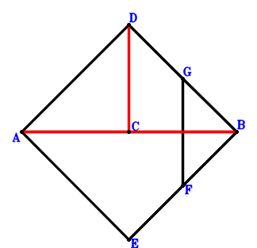
\(\because \) DAEB is a parallelogram \(\therefore \small\overrightarrow{BE}=\small\overrightarrow{BA} - \small\overrightarrow{BD}\).\(\because \) F is the midpoint of EB \(\therefore \small\overrightarrow{BF}=\dfrac{\small\overrightarrow{BE}}{2}=\dfrac{\small\overrightarrow{BA}}{2} - \dfrac{\small\overrightarrow{BD}}{2}\).\(\because \) G is the midpoint of DB \(\therefore \small\overrightarrow{BG}=\dfrac{\small\overrightarrow{BD}}{2}\).\(\because \) CB=AC \(\therefore - \small\overrightarrow{AC}^{2} + \small\overrightarrow{CB}^{2}=\small\overrightarrow{BC}^{2} - \left(- \small\overrightarrow{BA} + \small\overrightarrow{BC}\right)^{2}=- \small\overrightarrow{BA}^{2} + 2 \small\overrightarrow{BA} \cdot \small\overrightarrow{BC}=0\) . . . . . . \(①\)\(\because \) AB⊥GF \(\therefore \small\overrightarrow{AB} \cdot \small\overrightarrow{FG}=- \small\overrightarrow{BA} \cdot \left(- \small\overrightarrow{BF} + \small\overrightarrow{BG}\right)=- \small\overrightarrow{BA} \cdot \left(- \dfrac{\small\overrightarrow{BA}}{2} + \small\overrightarrow{BD}\right)=\dfrac{\small\overrightarrow{BA}^{2}}{2} - \small\overrightarrow{BA} \cdot \small\overrightarrow{BD}=0\) . . . . . . \(②\)In conclusion, \(\small\overrightarrow{AB} \cdot \small\overrightarrow{CD}=- \small\overrightarrow{BA} \cdot \left(- \small\overrightarrow{BC} + \small\overrightarrow{BD}\right)=\small\overrightarrow{BA} \cdot \small\overrightarrow{BC} - \small\overrightarrow{BA} \cdot \small\overrightarrow{BD}=1/2\cdot①+②=0\), that is, AB⊥DC.
Exercise 784： Let G, B, F be the midpoints of DB, DE, AE, respectively. AB⊥GF. CB=AC. Prove that AB⊥DC.
\(\because \) B is the midpoint of DE \(\therefore \small\overrightarrow{BE}=- \small\overrightarrow{BD}\).\(\because \) F is the midpoint of AE \(\therefore \small\overrightarrow{BF}=\dfrac{\small\overrightarrow{BA}}{2} + \dfrac{\small\overrightarrow{BE}}{2}=\dfrac{\small\overrightarrow{BA}}{2} - \dfrac{\small\overrightarrow{BD}}{2}\).\(\because \) G is the midpoint of DB \(\therefore \small\overrightarrow{BG}=\dfrac{\small\overrightarrow{BD}}{2}\).\(\because \) CB=AC \(\therefore - \small\overrightarrow{AC}^{2} + \small\overrightarrow{CB}^{2}=\small\overrightarrow{BC}^{2} - \left(- \small\overrightarrow{BA} + \small\overrightarrow{BC}\right)^{2}=- \small\overrightarrow{BA}^{2} + 2 \small\overrightarrow{BA} \cdot \small\overrightarrow{BC}=0\) . . . . . . \(①\)\(\because \) AB⊥GF \(\therefore \small\overrightarrow{AB} \cdot \small\overrightarrow{FG}=- \small\overrightarrow{BA} \cdot \left(- \small\overrightarrow{BF} + \small\overrightarrow{BG}\right)=- \small\overrightarrow{BA} \cdot \left(- \dfrac{\small\overrightarrow{BA}}{2} + \small\overrightarrow{BD}\right)=\dfrac{\small\overrightarrow{BA}^{2}}{2} - \small\overrightarrow{BA} \cdot \small\overrightarrow{BD}=0\) . . . . . . \(②\)In conclusion, \(\small\overrightarrow{AB} \cdot \small\overrightarrow{CD}=- \small\overrightarrow{BA} \cdot \left(- \small\overrightarrow{BC} + \small\overrightarrow{BD}\right)=\small\overrightarrow{BA} \cdot \small\overrightarrow{BC} - \small\overrightarrow{BA} \cdot \small\overrightarrow{BD}=1/2\cdot①+②=0\), that is, AB⊥DC.
Exercise 788： Let EDBF be a trapezoid with DB//EF and DB=2EF. G, E are the midpoints of DB, AB, respectively. AB⊥GF. CB=AC. Prove that AB⊥DC.
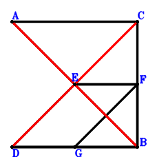
\(\because \) E is the midpoint of AB \(\therefore \small\overrightarrow{BE}=\dfrac{\small\overrightarrow{BA}}{2}\).\(\because \) DB//EF and DB=2EF \(\therefore \small\overrightarrow{BF}=\dfrac{\small\overrightarrow{BA}}{2} - \dfrac{\small\overrightarrow{BD}}{2}\).\(\because \) G is the midpoint of DB \(\therefore \small\overrightarrow{BG}=\dfrac{\small\overrightarrow{BD}}{2}\).\(\because \) CB=AC \(\therefore - \small\overrightarrow{AC}^{2} + \small\overrightarrow{CB}^{2}=\small\overrightarrow{BC}^{2} - \left(- \small\overrightarrow{BA} + \small\overrightarrow{BC}\right)^{2}=- \small\overrightarrow{BA}^{2} + 2 \small\overrightarrow{BA} \cdot \small\overrightarrow{BC}=0\) . . . . . . \(①\)\(\because \) AB⊥GF \(\therefore \small\overrightarrow{AB} \cdot \small\overrightarrow{FG}=- \small\overrightarrow{BA} \cdot \left(- \small\overrightarrow{BF} + \small\overrightarrow{BG}\right)=- \small\overrightarrow{BA} \cdot \left(- \dfrac{\small\overrightarrow{BA}}{2} + \small\overrightarrow{BD}\right)=\dfrac{\small\overrightarrow{BA}^{2}}{2} - \small\overrightarrow{BA} \cdot \small\overrightarrow{BD}=0\) . . . . . . \(②\)In conclusion, \(\small\overrightarrow{AB} \cdot \small\overrightarrow{CD}=- \small\overrightarrow{BA} \cdot \left(- \small\overrightarrow{BC} + \small\overrightarrow{BD}\right)=\small\overrightarrow{BA} \cdot \small\overrightarrow{BC} - \small\overrightarrow{BA} \cdot \small\overrightarrow{BD}=1/2\cdot①+②=0\), that is, AB⊥DC.
Exercise 792： Let DABE be a parallelogram. B is the midpoint of FE. AB⊥DF. CB=AC. Prove that AB⊥DC.
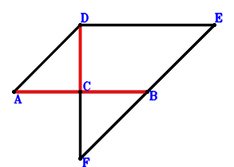
\(\because \) DABE is a parallelogram \(\therefore \small\overrightarrow{BE}=- \small\overrightarrow{BA} + \small\overrightarrow{BD}\).\(\because \) B is the midpoint of FE \(\therefore \small\overrightarrow{BF}=- \small\overrightarrow{BE}=\small\overrightarrow{BA} - \small\overrightarrow{BD}\).\(\because \) CB=AC \(\therefore - \small\overrightarrow{AC}^{2} + \small\overrightarrow{CB}^{2}=\small\overrightarrow{BC}^{2} - \left(- \small\overrightarrow{BA} + \small\overrightarrow{BC}\right)^{2}=- \small\overrightarrow{BA}^{2} + 2 \small\overrightarrow{BA} \cdot \small\overrightarrow{BC}=0\) . . . . . . \(①\)\(\because \) AB⊥DF \(\therefore \small\overrightarrow{AB} \cdot \small\overrightarrow{FD}=- \small\overrightarrow{BA} \cdot \left(\small\overrightarrow{BD} - \small\overrightarrow{BF}\right)=- \small\overrightarrow{BA} \cdot \left(- \small\overrightarrow{BA} + 2 \small\overrightarrow{BD}\right)=\small\overrightarrow{BA}^{2} - 2 \small\overrightarrow{BA} \cdot \small\overrightarrow{BD}=0\) . . . . . . \(②\)In conclusion, \(\small\overrightarrow{AB} \cdot \small\overrightarrow{CD}=- \small\overrightarrow{BA} \cdot \left(- \small\overrightarrow{BC} + \small\overrightarrow{BD}\right)=\small\overrightarrow{BA} \cdot \small\overrightarrow{BC} - \small\overrightarrow{BA} \cdot \small\overrightarrow{BD}=1/2\cdot①+1/2\cdot②=0\), that is, AB⊥DC.
Exercise 793： Let AFEB be a parallelogram. B is the midpoint of DE. AB⊥DF. CB=AC. Prove that AB⊥DC.
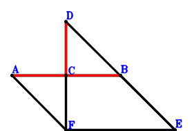
\(\because \) B is the midpoint of DE \(\therefore \small\overrightarrow{BE}=- \small\overrightarrow{BD}\).\(\because \) AFEB is a parallelogram \(\therefore \small\overrightarrow{BF}=\small\overrightarrow{BA} - \small\overrightarrow{BD}\).\(\because \) CB=AC \(\therefore - \small\overrightarrow{AC}^{2} + \small\overrightarrow{CB}^{2}=\small\overrightarrow{BC}^{2} - \left(- \small\overrightarrow{BA} + \small\overrightarrow{BC}\right)^{2}=- \small\overrightarrow{BA}^{2} + 2 \small\overrightarrow{BA} \cdot \small\overrightarrow{BC}=0\) . . . . . . \(①\)\(\because \) AB⊥DF \(\therefore \small\overrightarrow{AB} \cdot \small\overrightarrow{FD}=- \small\overrightarrow{BA} \cdot \left(\small\overrightarrow{BD} - \small\overrightarrow{BF}\right)=- \small\overrightarrow{BA} \cdot \left(- \small\overrightarrow{BA} + 2 \small\overrightarrow{BD}\right)=\small\overrightarrow{BA}^{2} - 2 \small\overrightarrow{BA} \cdot \small\overrightarrow{BD}=0\) . . . . . . \(②\)In conclusion, \(\small\overrightarrow{AB} \cdot \small\overrightarrow{CD}=- \small\overrightarrow{BA} \cdot \left(- \small\overrightarrow{BC} + \small\overrightarrow{BD}\right)=\small\overrightarrow{BA} \cdot \small\overrightarrow{BC} - \small\overrightarrow{BA} \cdot \small\overrightarrow{BD}=1/2\cdot①+1/2\cdot②=0\), that is, AB⊥DC.
Exercise 798： Let EAFB be a trapezoid with AF//EB and AF=2EB. E is the midpoint of DB. AB⊥DF. CB=AC. Prove that AB⊥DC.
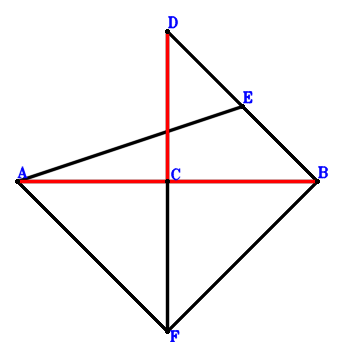
\(\because \) E is the midpoint of DB \(\therefore \small\overrightarrow{BE}=\dfrac{\small\overrightarrow{BD}}{2}\).\(\because \) AF//EB and AF=2EB \(\therefore \small\overrightarrow{BF}=\small\overrightarrow{BA} - 2 \small\overrightarrow{BE}=\small\overrightarrow{BA} - \small\overrightarrow{BD}\).\(\because \) CB=AC \(\therefore - \small\overrightarrow{AC}^{2} + \small\overrightarrow{CB}^{2}=\small\overrightarrow{BC}^{2} - \left(- \small\overrightarrow{BA} + \small\overrightarrow{BC}\right)^{2}=- \small\overrightarrow{BA}^{2} + 2 \small\overrightarrow{BA} \cdot \small\overrightarrow{BC}=0\) . . . . . . \(①\)\(\because \) AB⊥DF \(\therefore \small\overrightarrow{AB} \cdot \small\overrightarrow{FD}=- \small\overrightarrow{BA} \cdot \left(\small\overrightarrow{BD} - \small\overrightarrow{BF}\right)=- \small\overrightarrow{BA} \cdot \left(- \small\overrightarrow{BA} + 2 \small\overrightarrow{BD}\right)=\small\overrightarrow{BA}^{2} - 2 \small\overrightarrow{BA} \cdot \small\overrightarrow{BD}=0\) . . . . . . \(②\)In conclusion, \(\small\overrightarrow{AB} \cdot \small\overrightarrow{CD}=- \small\overrightarrow{BA} \cdot \left(- \small\overrightarrow{BC} + \small\overrightarrow{BD}\right)=\small\overrightarrow{BA} \cdot \small\overrightarrow{BC} - \small\overrightarrow{BA} \cdot \small\overrightarrow{BD}=1/2\cdot①+1/2\cdot②=0\), that is, AB⊥DC.
Exercise 809： Let DABE be a trapezoid with AB//DE and AB=2DE. AB⊥BE. CB=AC. Prove that AB⊥CD.
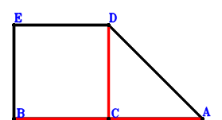
\(\because \) AB//DE and AB=2DE \(\therefore \small\overrightarrow{BE}=- \dfrac{\small\overrightarrow{BA}}{2} + \small\overrightarrow{BD}\).\(\because \) CB=AC \(\therefore - \small\overrightarrow{AC}^{2} + \small\overrightarrow{CB}^{2}=\small\overrightarrow{BC}^{2} - \left(- \small\overrightarrow{BA} + \small\overrightarrow{BC}\right)^{2}=- \small\overrightarrow{BA}^{2} + 2 \small\overrightarrow{BA} \cdot \small\overrightarrow{BC}=0\) . . . . . . \(①\)\(\because \) AB⊥BE \(\therefore - \small\overrightarrow{BA} \cdot \small\overrightarrow{BE}=- \small\overrightarrow{BA} \cdot \left(- \dfrac{\small\overrightarrow{BA}}{2} + \small\overrightarrow{BD}\right)=\dfrac{\small\overrightarrow{BA}^{2}}{2} - \small\overrightarrow{BA} \cdot \small\overrightarrow{BD}=0\) . . . . . . \(②\)In conclusion, \(\small\overrightarrow{AB} \cdot \small\overrightarrow{CD}=- \small\overrightarrow{BA} \cdot \left(- \small\overrightarrow{BC} + \small\overrightarrow{BD}\right)=\small\overrightarrow{BA} \cdot \small\overrightarrow{BC} - \small\overrightarrow{BA} \cdot \small\overrightarrow{BD}=1/2\cdot①+②=0\), that is, AB⊥CD.
Exercise 810： Let DAEB be a trapezoid with AD//EB and AD=2EB. E is the midpoint of DF. AB⊥BF. CB=AC. Prove that AB⊥DC.
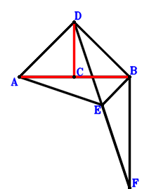
\(\because \) AD//EB and AD=2EB \(\therefore \small\overrightarrow{BE}=\dfrac{\small\overrightarrow{BA}}{2} - \dfrac{\small\overrightarrow{BD}}{2}\).\(\because \) E is the midpoint of DF \(\therefore \small\overrightarrow{BF}=- \small\overrightarrow{BD} + 2 \small\overrightarrow{BE}=\small\overrightarrow{BA} - 2 \small\overrightarrow{BD}\).\(\because \) CB=AC \(\therefore - \small\overrightarrow{AC}^{2} + \small\overrightarrow{CB}^{2}=\small\overrightarrow{BC}^{2} - \left(- \small\overrightarrow{BA} + \small\overrightarrow{BC}\right)^{2}=- \small\overrightarrow{BA}^{2} + 2 \small\overrightarrow{BA} \cdot \small\overrightarrow{BC}=0\) . . . . . . \(①\)\(\because \) AB⊥BF \(\therefore \small\overrightarrow{BA} \cdot \small\overrightarrow{BF}=\small\overrightarrow{BA} \cdot \left(\small\overrightarrow{BA} - 2 \small\overrightarrow{BD}\right)=\small\overrightarrow{BA}^{2} - 2 \small\overrightarrow{BA} \cdot \small\overrightarrow{BD}=0\) . . . . . . \(②\)In conclusion, \(\small\overrightarrow{AB} \cdot \small\overrightarrow{CD}=- \small\overrightarrow{BA} \cdot \left(- \small\overrightarrow{BC} + \small\overrightarrow{BD}\right)=\small\overrightarrow{BA} \cdot \small\overrightarrow{BC} - \small\overrightarrow{BA} \cdot \small\overrightarrow{BD}=1/2\cdot①+1/2\cdot②=0\), that is, AB⊥DC.
Exercise 844： Let DAEB and DEFB be parallelograms. AB⊥BF. CB=AC. Prove that AB⊥DC.
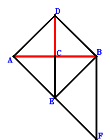
\(\because \) DAEB is a parallelogram \(\therefore \small\overrightarrow{BE}=\small\overrightarrow{BA} - \small\overrightarrow{BD}\).\(\because \) DEFB is a parallelogram \(\therefore \small\overrightarrow{BF}=\small\overrightarrow{BA} - 2 \small\overrightarrow{BD}\).\(\because \) CB=AC \(\therefore - \small\overrightarrow{AC}^{2} + \small\overrightarrow{CB}^{2}=\small\overrightarrow{BC}^{2} - \left(- \small\overrightarrow{BA} + \small\overrightarrow{BC}\right)^{2}=- \small\overrightarrow{BA}^{2} + 2 \small\overrightarrow{BA} \cdot \small\overrightarrow{BC}=0\) . . . . . . \(①\)\(\because \) AB⊥BF \(\therefore \small\overrightarrow{BA} \cdot \small\overrightarrow{BF}=\small\overrightarrow{BA} \cdot \left(\small\overrightarrow{BA} - 2 \small\overrightarrow{BD}\right)=\small\overrightarrow{BA}^{2} - 2 \small\overrightarrow{BA} \cdot \small\overrightarrow{BD}=0\) . . . . . . \(②\)In conclusion, \(\small\overrightarrow{AB} \cdot \small\overrightarrow{CD}=- \small\overrightarrow{BA} \cdot \left(- \small\overrightarrow{BC} + \small\overrightarrow{BD}\right)=\small\overrightarrow{BA} \cdot \small\overrightarrow{BC} - \small\overrightarrow{BA} \cdot \small\overrightarrow{BD}=1/2\cdot①+1/2\cdot②=0\), that is, AB⊥DC.
Exercise 847： Let DAEF be a trapezoid with AD//EF and AD=2EF. E is the midpoint of DB. AB⊥BF. CB=AC. Prove that AB⊥DC.
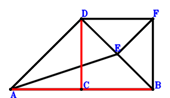
\(\because \) E is the midpoint of DB \(\therefore \small\overrightarrow{BE}=\dfrac{\small\overrightarrow{BD}}{2}\).\(\because \) AD//EF and AD=2EF \(\therefore \small\overrightarrow{BF}=- \dfrac{\small\overrightarrow{BA}}{2} + \small\overrightarrow{BD}\).\(\because \) CB=AC \(\therefore - \small\overrightarrow{AC}^{2} + \small\overrightarrow{CB}^{2}=\small\overrightarrow{BC}^{2} - \left(- \small\overrightarrow{BA} + \small\overrightarrow{BC}\right)^{2}=- \small\overrightarrow{BA}^{2} + 2 \small\overrightarrow{BA} \cdot \small\overrightarrow{BC}=0\) . . . . . . \(①\)\(\because \) AB⊥BF \(\therefore - \small\overrightarrow{BA} \cdot \small\overrightarrow{BF}=- \small\overrightarrow{BA} \cdot \left(- \dfrac{\small\overrightarrow{BA}}{2} + \small\overrightarrow{BD}\right)=\dfrac{\small\overrightarrow{BA}^{2}}{2} - \small\overrightarrow{BA} \cdot \small\overrightarrow{BD}=0\) . . . . . . \(②\)In conclusion, \(\small\overrightarrow{AB} \cdot \small\overrightarrow{CD}=- \small\overrightarrow{BA} \cdot \left(- \small\overrightarrow{BC} + \small\overrightarrow{BD}\right)=\small\overrightarrow{BA} \cdot \small\overrightarrow{BC} - \small\overrightarrow{BA} \cdot \small\overrightarrow{BD}=1/2\cdot①+②=0\), that is, AB⊥DC.
Exercise 849： Let EAFB be a parallelogram. D is the midpoint of EB. AB⊥BF. CB=AC. Prove that AB⊥DC.
\(\because \) D is the midpoint of EB \(\therefore \small\overrightarrow{BE}=2 \small\overrightarrow{BD}\).\(\because \) EAFB is a parallelogram \(\therefore \small\overrightarrow{BF}=\small\overrightarrow{BA} - \small\overrightarrow{BE}=\small\overrightarrow{BA} - 2 \small\overrightarrow{BD}\).\(\because \) CB=AC \(\therefore - \small\overrightarrow{AC}^{2} + \small\overrightarrow{CB}^{2}=\small\overrightarrow{BC}^{2} - \left(- \small\overrightarrow{BA} + \small\overrightarrow{BC}\right)^{2}=- \small\overrightarrow{BA}^{2} + 2 \small\overrightarrow{BA} \cdot \small\overrightarrow{BC}=0\) . . . . . . \(①\)\(\because \) AB⊥BF \(\therefore \small\overrightarrow{BA} \cdot \small\overrightarrow{BF}=\small\overrightarrow{BA} \cdot \left(\small\overrightarrow{BA} - 2 \small\overrightarrow{BD}\right)=\small\overrightarrow{BA}^{2} - 2 \small\overrightarrow{BA} \cdot \small\overrightarrow{BD}=0\) . . . . . . \(②\)In conclusion, \(\small\overrightarrow{AB} \cdot \small\overrightarrow{CD}=- \small\overrightarrow{BA} \cdot \left(- \small\overrightarrow{BC} + \small\overrightarrow{BD}\right)=\small\overrightarrow{BA} \cdot \small\overrightarrow{BC} - \small\overrightarrow{BA} \cdot \small\overrightarrow{BD}=1/2\cdot①+1/2\cdot②=0\), that is, AB⊥DC.
Exercise 850： Let D be the midpoint of EB. EA⊥AB. CB=AC. Prove that AB⊥CD.
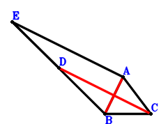
\(\because \) D is the midpoint of EB \(\therefore \small\overrightarrow{BE}=2 \small\overrightarrow{BD}\).\(\because \) CB=AC \(\therefore - \small\overrightarrow{AC}^{2} + \small\overrightarrow{CB}^{2}=\small\overrightarrow{BC}^{2} - \left(- \small\overrightarrow{BA} + \small\overrightarrow{BC}\right)^{2}=- \small\overrightarrow{BA}^{2} + 2 \small\overrightarrow{BA} \cdot \small\overrightarrow{BC}=0\) . . . . . . \(①\)\(\because \) EA⊥AB \(\therefore \small\overrightarrow{AB} \cdot \small\overrightarrow{AE}=- \small\overrightarrow{BA} \cdot \left(- \small\overrightarrow{BA} + \small\overrightarrow{BE}\right)=- \small\overrightarrow{BA} \cdot \left(- \small\overrightarrow{BA} + 2 \small\overrightarrow{BD}\right)=\small\overrightarrow{BA}^{2} - 2 \small\overrightarrow{BA} \cdot \small\overrightarrow{BD}=0\) . . . . . . \(②\)In conclusion, \(\small\overrightarrow{AB} \cdot \small\overrightarrow{CD}=- \small\overrightarrow{BA} \cdot \left(- \small\overrightarrow{BC} + \small\overrightarrow{BD}\right)=\small\overrightarrow{BA} \cdot \small\overrightarrow{BC} - \small\overrightarrow{BA} \cdot \small\overrightarrow{BD}=1/2\cdot①+1/2\cdot②=0\), that is, AB⊥CD.
Exercise 853： Let DABE be a parallelogram. F is the midpoint of DE. AB⊥BF. CB=AC. Prove that AB⊥DC.
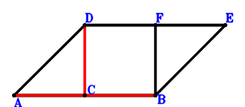
\(\because \) DABE is a parallelogram \(\therefore \small\overrightarrow{BE}=- \small\overrightarrow{BA} + \small\overrightarrow{BD}\).\(\because \) F is the midpoint of DE \(\therefore \small\overrightarrow{BF}=\dfrac{\small\overrightarrow{BD}}{2} + \dfrac{\small\overrightarrow{BE}}{2}=- \dfrac{\small\overrightarrow{BA}}{2} + \small\overrightarrow{BD}\).\(\because \) CB=AC \(\therefore - \small\overrightarrow{AC}^{2} + \small\overrightarrow{CB}^{2}=\small\overrightarrow{BC}^{2} - \left(- \small\overrightarrow{BA} + \small\overrightarrow{BC}\right)^{2}=- \small\overrightarrow{BA}^{2} + 2 \small\overrightarrow{BA} \cdot \small\overrightarrow{BC}=0\) . . . . . . \(①\)\(\because \) AB⊥BF \(\therefore - \small\overrightarrow{BA} \cdot \small\overrightarrow{BF}=- \small\overrightarrow{BA} \cdot \left(- \dfrac{\small\overrightarrow{BA}}{2} + \small\overrightarrow{BD}\right)=\dfrac{\small\overrightarrow{BA}^{2}}{2} - \small\overrightarrow{BA} \cdot \small\overrightarrow{BD}=0\) . . . . . . \(②\)In conclusion, \(\small\overrightarrow{AB} \cdot \small\overrightarrow{CD}=- \small\overrightarrow{BA} \cdot \left(- \small\overrightarrow{BC} + \small\overrightarrow{BD}\right)=\small\overrightarrow{BA} \cdot \small\overrightarrow{BC} - \small\overrightarrow{BA} \cdot \small\overrightarrow{BD}=1/2\cdot①+②=0\), that is, AB⊥DC.
Exercise 854： Let AB⊥CD. AB=CA. Given that D, A, B are collinear, prove that \(CB^{2}=2 AB \cdot DB\).
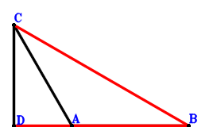
\(\because \) AB=CA \(\therefore \small\overrightarrow{AB}^{2} - \small\overrightarrow{AC}^{2}=\small\overrightarrow{BA}^{2} - \left(- \small\overrightarrow{BA} + \small\overrightarrow{BC}\right)^{2}=2 \small\overrightarrow{BA} \cdot \small\overrightarrow{BC} - \small\overrightarrow{BC}^{2}=0\) . . . . . . \(①\)\(\because \) AB⊥CD \(\therefore \small\overrightarrow{AB} \cdot \small\overrightarrow{CD}=- \small\overrightarrow{BA} \cdot \left(- \small\overrightarrow{BC} + \small\overrightarrow{BD}\right)=\small\overrightarrow{BA} \cdot \small\overrightarrow{BC} - \small\overrightarrow{BA} \cdot \small\overrightarrow{BD}=0\) . . . . . . \(②\)In conclusion, \(- 2 \small\overrightarrow{BA} \cdot \small\overrightarrow{BD} + \small\overrightarrow{BC}^{2}=-①+2\cdot②=0\)\(\because\) D, A, B are collinear \(\therefore\) \(CB^{2}=2 AB \cdot DB\).